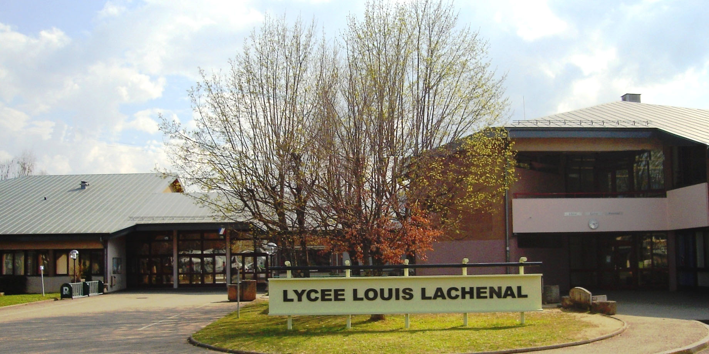
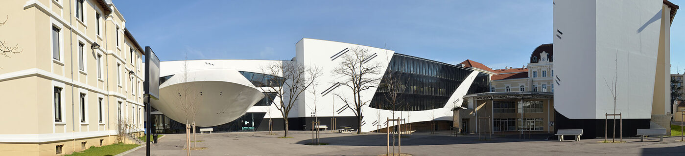
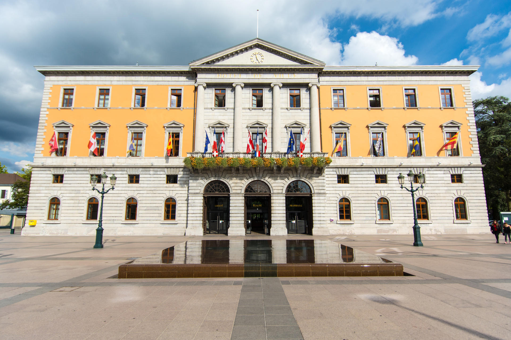
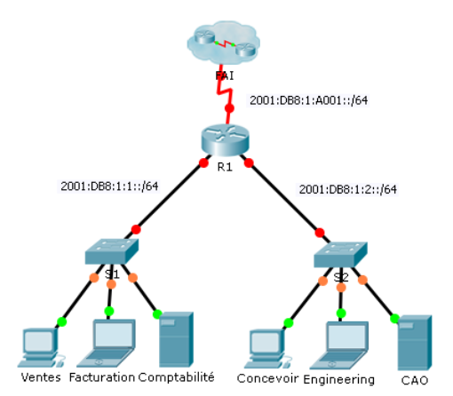
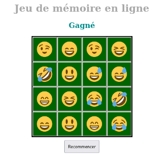
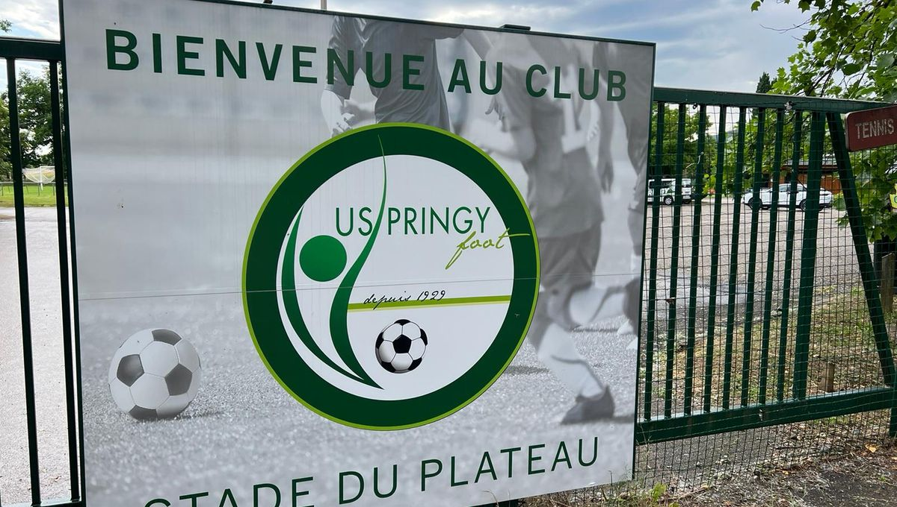
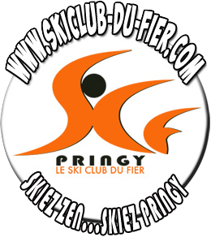
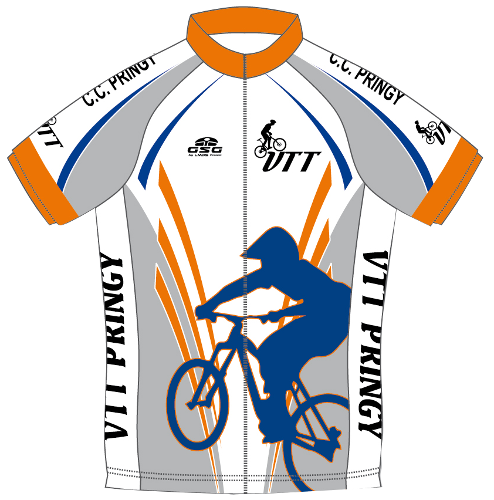
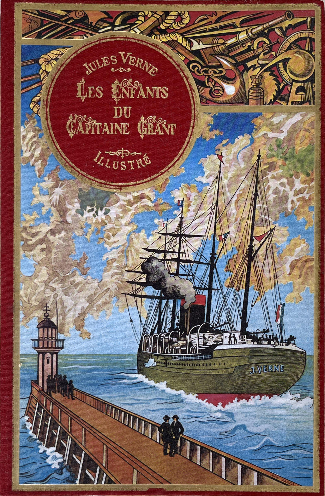

À propos de moi
Je suis Florian Guetat, actuellement étudiant en première année de Bachelor Universitaire de Technologie en Réseaux et Télécommunications à Aubière (63).
Je suis fortement motivé à travailler dans le domaine de la cybersécurité. Les projets réalisés dans ma spécialité en Numérique et Sciences de l'Informatique, ainsi que l'étude approfondie du cryptage des données lors de certaines leçons de Mathématiques expertes, ont consolidé cette ambition. Cela m'a poussé à envisager de poursuivre mes études en Bachelor Universitaire de Technologie en Réseaux et Télécommunications. Après ces trois années, mon objectif serait de continuer avec un master en cybersécurité. L'objectif ultime est de travailler dans le domaine de la cybersécurité et pourquoi pas plus tard devenir un hacker éthique, quelqu'un qui utilise ses compétences en informatique pour identifier et résoudre des problèmes de sécurité, tout en respectant l'éthique et la légalité, et contribuant à renforcer la sécurité des systèmes informatiques.
Le cheminement que j'ai décrit commence par un Bachelor en Réseaux et Télécommunications afin de poser des bases techniques solides. Ensuite, le master en cybersécurité me permettra de me spécialiser davantage dans le domaine de la sécurité informatique.
Je suis quelqu'un de très rigoureux, organisé et doté d'un excellent esprit d'équipe, des qualités que j'ai développées et perfectionnées au cours de mes diverses expériences académiques et professionnelles.
Je suis à la recherche d'une alternance à compter de septembre 2024, dans les domaines des réseaux, des télécommunications ou de la cybersécurité. L'alternance fonctionnera sur un système d'un mois en entreprise suivi d'un mois en formation.
Formation
- Février 2024 : Validation de mon premier semestre de Bachelor Universitaire de Technologie en Réseaux et Télécommunications
- Septembre 2023 : Début de ma première année de Bachelor Universitaire de Technologie en Réseaux et Télécommunications à Clermont-Ferrand (63).
- Juin 2023 : Obtention du baccalauréat général mention assez bien spécialités mathématiques expertes et numérique sciences de l'informatique au lycée Louis Lachenal d'Argonay (74). 
- Septembre 2021 - Juin 2022 : Section sportive arbitre de foot au Lycée Frédéric Faÿs à Villeurbanne (69). 

Expériences professionnelles
- Mai 2024 : Participation en tant que jury aux Cordées de la réussite
- Été 2023, Été 2021 : Travail au sein du restaurant "Le Céjo" à Metz-Tessy (74) en tant qu'aide cuisine et plongeur
- Novembre 2019 : Stage de 3ème au sein du restaurant "Le Céjo" (74) en tant qu'aide cuisinier
- Août 2021 : Chantier de rénovation au sein de la mairie d'Annecy
- 2020-2023 : Arbitre de foot au niveau régional
Les compétences que j'ai développées grâce à ces expériences incluent la curiosité, en m'intéressant aux plats préparés par le chef, et une progression vers une plus grande autonomie au fil du temps.

Lors de cette expérience professionnelle, j'ai développé ma rigueur en participant à la rénovation d'une maison, ce qui nécessitait une exécution soignée des travaux. Par ailleurs, cette expérience m'a permis d'améliorer ma capacité à travailler en équipe.
Le rôle d'arbitre m'a permis de renforcer mon leadership en prenant des décisions rapides et en faisant respecter les règles du jeu. De plus, j'ai développé une bonne gestion du stress en restant calme même dans les situations tendues.
Compétences
Les jauges ci-dessous indiquent le niveau par rapport à celui attendu d'un étudiant de première année de Bachelor Universitaire de Technologie en Réseaux et Télécommunications.
Réseaux :
- Base de Données
- Configuration routeurs
- Administration système
- Active Directory
- Création de Machine Virtuelle
Télécommunications :
- Décomposition des signaux
- Représentation temporelle et fréquentielle des signaux
- Analyse spectrale
- Utilisation de filtres
Programmation :
- SQL
- JavaScript
- PHP
- Python
- HTML/CSS
- Bash
Téléphonie :
- Téléphonie IP
- Réseau Téléphonique Commuté
- Serveur d'appels
- Softphone
Esprit d'équipe : Cette qualité a été améliorée durant mes expériences professionnelles qui ont été réalisées en équipe. De plus, le fait d'avoir fait 15 ans de foot a également renforcé cette compétence.
Rigueur : La rigueur est une qualité essentielle selon moi. En tant qu'ancien arbitre ou assistant cuisinier, je me devais d'être irréprochable. On m'a également dit durant une expérience professionnelle que j'étais quasiment trop à cheval sur la rigueur.
Organisation : L'organisation, qui je pense va avec la rigueur, est une des qualités qui me correspond le plus. Pour moi, tout doit être planifié et trié instantanément.
Projets
Tours de Hanoï
Contexte : Dans le cadre du premier semestre du Bachelor Universitaire de Technologie en Réseaux et Télécommunications, j'ai réalisé un code python afin de réaliser une automatisation du jeu de la tour d'Hanoï.
Objectif : Mettre en pratique les commandes Python acquises lors du premier semestre afin d'automatiser un programme.
Résultat : Note : 1.75/2
Moyenne de classe : 1.30/2


Création d'un jeu d'enquête
Contexte : Projet de fin d'année de terminale par groupe de 4
Objectif : Réaliser un jeu vidéo interactif ou une application interactive
Résultat : Note : 17/20
Moyenne de classe : 14.5/20


Construire un réseau
Contexte : Travail pratique en binôme, réalisé pendant une séance de 3 heures lors du deuxième semestre de BUT Réseaux et Télécommunications.
Objectif : Implémenter la translation d’adresse avec iptables sous Linux.
Résultat : En attente de notation
Création d'un jeu de mémoire en PHP
Contexte : Travail pratique réalisé en autonomie supervisé par un professeur.
Objectif : Apprendre le langage PHP
Résultat : En attente de notation
Projet intégratif
Contexte : Travail de fin de première année BUT Réseaux et Télécommunications reprenant tous les acquis de cette première année. Travail réalisé par groupe de 5 étudiants.
Objectif : Concevoir et mettre en place une infrastructure correspondant au réseau d’une petite entreprise
Résultat : En attente de notation

Divers
- Footballeur au sein du club de l'US Pringy en Haute-Savoie (74) de 2009 à 2023 aux niveaux départemental et régional
- Lors de la saison 2020-2021, je suis devenu entraîneur de football au sein de ce même club où j'entraînais des enfants de 10-11 ans. 
- Je suis également devenu arbitre de football au niveau départemental en 2020 puis au niveau régional de 2021 à 2023 pour le compte du club de l'US Pringy (74).
- Je fais également du ski depuis que j'ai 4 ans et j'ai fait 4 ans de ski en club au Ski Club du Fier à Pringy (74). 
- J'ai également fait du VTT de 2012 à 2020 au sein du Cyclo club de Pringy. 
- J'aime également lire des livres d'auteurs tels qu'Émile Zola, Victor Hugo ou Jules Verne. 

Curriculum Vitae
Contacts
Nom: Florian GUETAT
Email:Florian.GUETAT@etu.uca.fr
Téléphone:+33 7 68 24 07 42
Adresse sur Annecy:74370, Ferrières, Pringy, Annecy
Adresse sur Clermont:rue des Meuniers,63000 Clermont-Ferrand